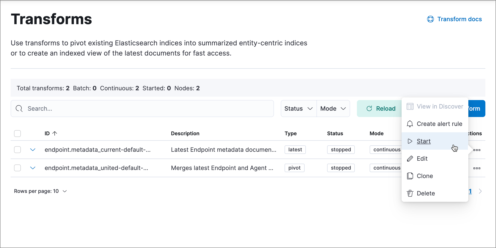

Endpoint managementedit
This topic covers common troubleshooting issues when using Elastic Security endpoint management tools.
Endpointsedit
Unhealthy Elastic Agent status
In some cases, an Unhealthy Elastic Agent status may be caused by a failure in the Elastic Defend integration policy. In this situation, the integration and any failing features are flagged on the agent details page in Fleet. Expand each section and subsection to display individual responses from the agent.
Integration policy response information is also available from the Endpoints page in the Elastic Security app (Manage → Endpoints, then click the link in the Policy status column).

Common causes of failure in the Elastic Defend integration policy include missing prerequisites or unexpected system configuration. Consult the following topics to resolve a specific error:
If the Elastic Defend integration policy is not the cause of the Unhealthy agent status, refer to Fleet troubleshooting for help with the Elastic Agent.
Disabled to avoid potential system deadlock (Linux)
If you have an Unhealthy Elastic Agent status with the message Disabled due to potential system deadlock, that means malware protection was disabled on the Elastic Defend integration policy due to errors while monitoring a Linux host.
You can resolve the issue by configuring the policy’s advanced settings related to fanotify, a Linux feature that monitors file system events. By default, Elastic Defend works with fanotify to monitor specific file system types that Elastic has tested for compatibility, and ignores other unknown file system types.
If your network includes nonstandard, proprietary, or otherwise unrecognized Linux file systems that cause errors while being monitored, you can configure Elastic Defend to ignore those file systems. This allows Elastic Defend to resume monitoring and protecting the hosts on the integration policy.
Ignoring file systems can create gaps in your security coverage. Use additional security layers for any file systems ignored by Elastic Defend.
To resolve the potential system deadlock error:
- Go to Manage → Policies, then click a policy’s name.
- Scroll to the bottom of the policy and click Show advanced settings.
-
In the setting
linux.advanced.fanotify.ignored_filesystems, enter a comma-separated list of file system names to ignore, as they appear in/proc/filesystems(for example:ext4,tmpfs). Refer to Find file system names for more on determining the file system names. -
Click Save.
Once you save the policy, malware protection is re-enabled.
Required transform failed
If you encounter a “Required transform failed” notice on the Endpoints page, you can usually resolve the issue by restarting the transform. Refer to Transforming data for more information about transforms.
To restart a transform that’s not running:
- Go to Kibana → Stack Management → Data → Transforms.
-
Enter
endpoint.metadatain the search box to find the transforms for Elastic Defend. -
Click the Actions menu (…) and do one of the following for each transform, depending on the value in the Status column:
-
stopped: Select Start to restart the transform. -
failed: Select Stop to first stop the transform, and then select Start to restart it.
-
- On the confirmation message that displays, click Start to restart the transform.
-
The transform’s status changes to
started. If it doesn’t change, refresh the page.
Elastic Agent and Endpoint connection issues
After Elastic Agent installs Endpoint, Endpoint connects to Elastic Agent over a local relay connection to report its health status and receive policy updates and response action requests. If that connection cannot be established, the Elastic Defend integration will cause Elastic Agent to be in an Unhealthy status, and Endpoint won’t operate properly.
Identify if the issue is happeningedit
You can identify if this issue is happening in the following ways:
-
Run Elastic Agent’s status command:
-
sudo /opt/Elastic/Agent/elastic-agent status(Linux) -
sudo /Library/Elastic/Agent/elastic-agent status(macOS) -
c:\Program Files\Elastic\Agent\elastic-agent.exe status(Windows)
If the status result for
endpoint-securitysays that Endpoint has missed check-ins orlocalhost:6788cannot be bound to, it might indicate this problem is occurring. -
-
If the problem starts happening right after installing Endpoint, check the value of
fleet.agent.idin the following file:-
/opt/Elastic/Endpoint/elastic-endpoint.yaml(Linux) -
/Library/Elastic/Endpoint/elastic-endpoint.yaml(macOS) -
c:\Program Files\Elastic\Endpoint\elastic-endpoint.yaml(Windows)
If the value of
fleet.agent.idis00000000-0000-0000-0000-000000000000, this indicates this problem is occurring.If this problem starts happening after Endpoint has already been installed and working properly, then this value will have changed even though the problem is happening.
-
Examine Endpoint logsedit
If you’ve confirmed that the issue is happening, you can look at Endpoint log messages to identify the cause:
-
Failed to find connection to validate. Is Agent listening on 127.0.0.1:6788?orFailed to validate connection. Is Agent running as root/admin?means that Endpoint is not able to create an initial connection to Elastic Agent over port6788. -
Unable to make GRPC connection in deadline(60s). Fetching connection info againmeans that Endpoint’s original connection to Elastic Agent over port6788worked, but the connection over port6789is failing.
Resolve the issueedit
To debug and resolve the issue, follow these steps:
-
Since 8.7.0, Endpoint diagnostics contain a file named
analysis.txtthat contains information about what may cause this issue. As of 8.11.2, Elastic Agent diagnostics automatically include Endpoint diagnostics. For previous versions, you can gather Endpoint diagnostics by running:-
sudo /opt/Elastic/Endpoint/elastic-endpoint diagnostics(Linux) -
sudo /Library/Elastic/Endpoint/elastic-endpoint diagnostics(macOS) -
c:\Program Files\Elastic\Endpoint\elastic-endpoint.exe diagnostics(Windows)
-
-
Make sure nothing else on your device is listening on ports
6788or6789by running:-
sudo netstat -anp --tcp(Linux) -
sudo netstat -an -f inet(macOS) -
netstat -an(Windows)
-
-
Make sure
localhostcan be resolved to127.0.0.1by running:-
ping -4 -c 1 localhost(Linux) -
ping -c 1 localhost(macOS) -
ping -4 localhost(Windows)
-